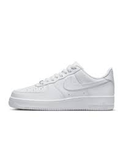
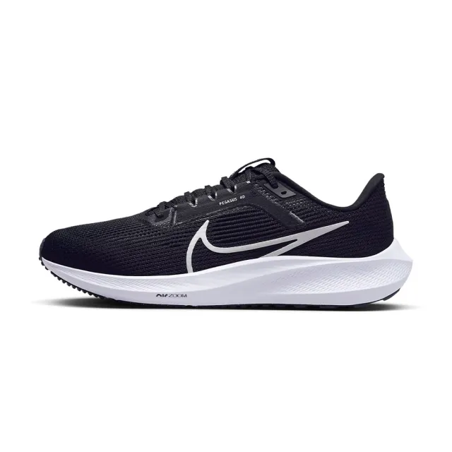
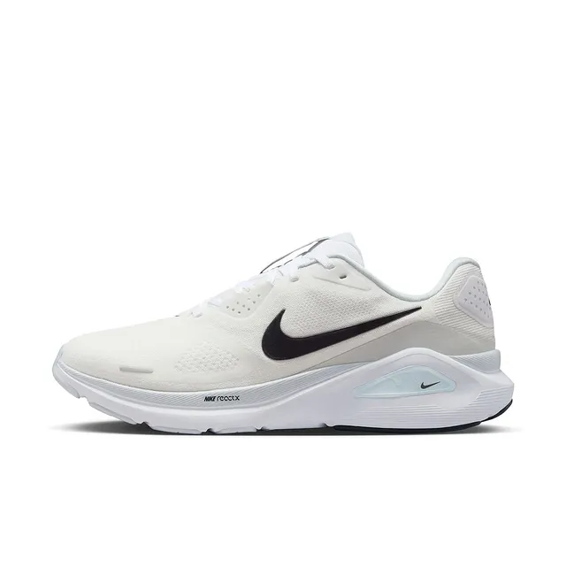
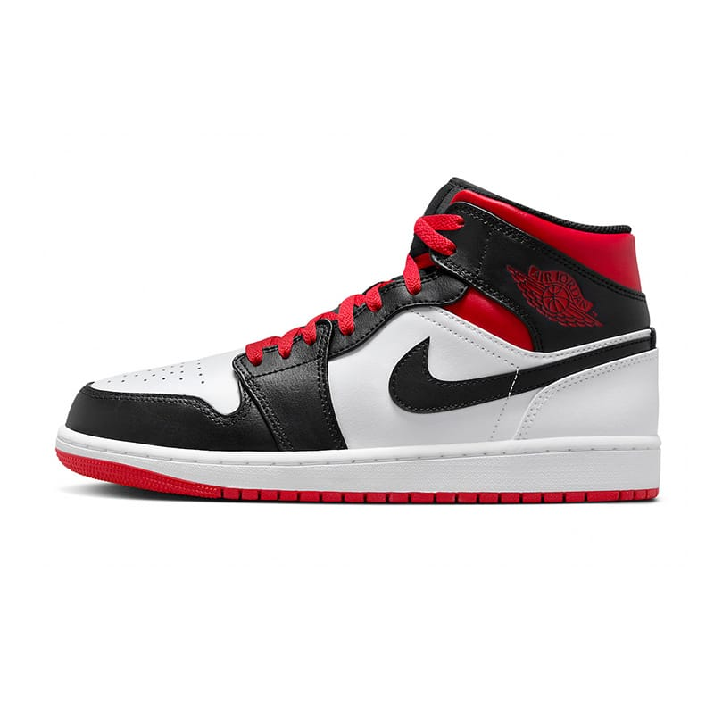
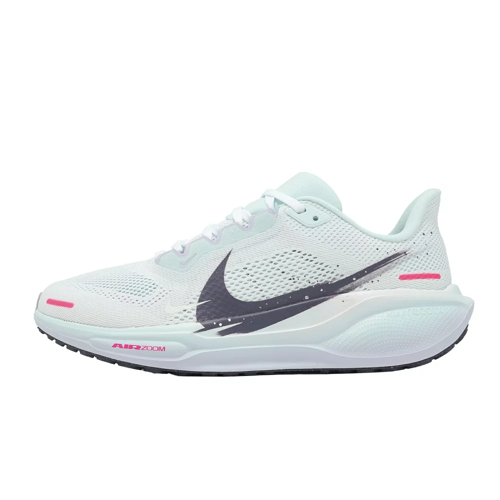
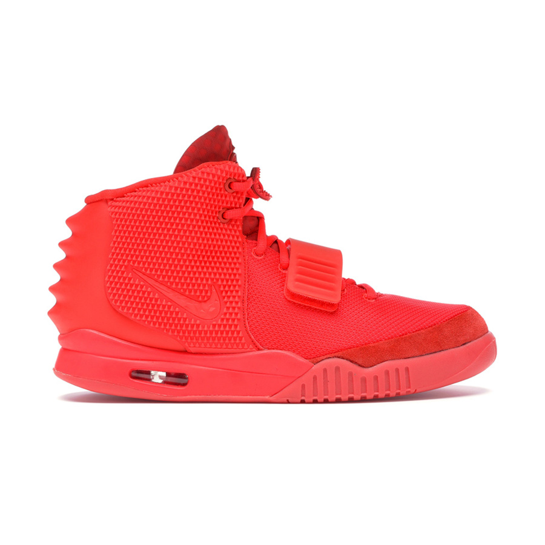
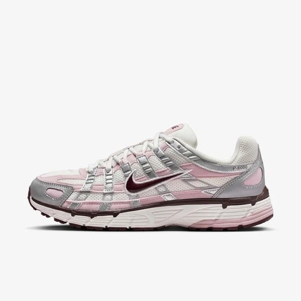

目前資料庫中，NIKE TECH 的所有產品列表
| 產品編碼 | 產品名稱 | 售價 | 產品描述 | 產品圖示 | 現有庫存 | 最後異動時間 |
|---|---|---|---|---|---|---|
| shoe_casual_01 | Air Max Pulse | NT$ 4,500 | 引領街頭潮流的巔峰之作，搭載全新加大的 Air 氣墊系統。 |  | 85 | 2026-04-29 22:00:00 |
| shoe_casual_02 | Nike Dunk Low | NT$ 3,100 | 經典 80 年代球場風範回歸，簡潔有力且百搭的色塊設計。 |  | 120 | 2026-04-29 22:00:00 |
| shoe_casual_03 | Air Force 1 '07 | NT$ 3,400 | 傳奇仍在續寫。俐落的皮革邊緣與正好合適的亮點，展現最純粹的街頭精神。 |  | 200 | 2026-04-29 22:00:00 |
| shoe_casual_04 | Blazer Mid '77 | NT$ 3,100 | 復古風格與現代科技的交匯，經典的 Swoosh 標誌與仿舊處理。 |  | 65 | 2026-04-29 22:00:00 |
| shoe_sport_01 | Pegasus 40 | NT$ 3,500 | 回彈力十足的腳感，專為長距離奔跑設計。無論是日常跑步還是馬拉松，它都是你的最佳夥伴。 |  | 150 | 2026-04-29 22:00:00 |
| shoe_sport_02 | Metcon 9 | NT$ 4,500 | 訓練場上的全能王者。更大的 Hyperlift 板件與橡膠包覆。 |  | 40 | 2026-04-29 22:00:00 |
| shoe_sport_03 | LeBron NXXT Gen | NT$ 5,200 | 為當今快節奏的比賽量身打造，靈活且支撐力強，讓你像國王一樣統治球場。 |  | 30 | 2026-04-29 22:00:00 |
| shoe_sport_04 | Zoom Fly 5 | NT$ 4,900 | 將競速感融入日常訓練。碳纖維板與 ZoomX 泡棉的組合。 |  | 55 | 2026-04-29 22:00:00 |
| shoe_high_01 | Nike Mag 2011 | NT$ 880,000 | 來自未來的傳奇。這不僅是一雙鞋，更是科技與電影文化的終極結晶。 |  | 5 | 2026-04-29 22:00:00 |
| shoe_high_02 | Air Jordan 1 x Off-White | NT$ 150,000 | 解構主義的代表作。Virgil Abloh 的天才設計將經典 AJ1 重新定義為藝術品。 |  | 12 | 2026-04-29 22:00:00 |
| shoe_high_03 | Adapt BB 2.0 | NT$ 12,500 | 自動繫帶科技的巔峰，透過手機 App 精確調整緊度，體驗真正的科技未來。 |  | 25 | 2026-04-29 22:00:00 |
| shoe_high_04 | Air Yeezy 2 Red October | NT$ 350,000 | 潮流史上的巔峰轉折點，全紅色的震撼視覺與稀缺性，使其成為永恆的傳奇。 |  | 8 | 2026-04-29 22:00:00 |